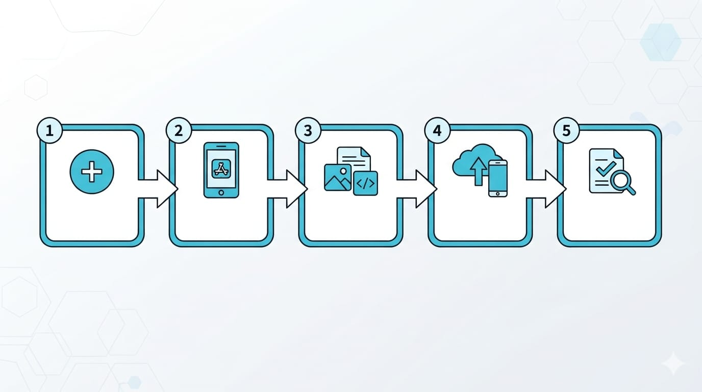

App 能跑、能記憶、能連網了——前四篇的努力，現在要開花結果：把它放上 App Store，讓全世界都能下載。
很多人到這一步會緊張，因為上架牽涉帳號、憑證、審核，看起來很複雜。別擔心，這篇把整個流程拆成清楚的步驟，並且告訴你最常見的退件地雷怎麼避開。
查證時間：2026-09-27。以下流程與費用參考 Apple 官方文件，Apple 的介面與規則可能調整，實際請以 App Store 審核官方頁與 App Store Connect 為準。
上架的整體流程

大致是五步：加入開發者帳號 → 在 App Store Connect 建立 App → 準備素材與資訊 → 用 Xcode 上傳 → 送審。一個一個來。
步驟一：加入 Apple Developer Program
要上架，必須是付費會員。到 Apple Developer 註冊：
- 費用：每年 US$99（來源：Apple 官方會員比較頁）。
- 可選「個人」或「組織」身分，兩者費用一樣（US$99/年），但差別不小：
| 個人 | 組織 | |
|---|---|---|
| App 上顯示的名稱 | 你的本名 | 公司／團體名稱 |
| 註冊速度 | 快 | 慢（要驗證公司） |
| 需要文件 | Apple ID + 身分 | D-U-N-S 鄧白氏編號（見下方說明）+ 需為合法登記公司 |
| 多人協作 | 只有你 | 可加團隊成員、分權限 |
| 適合 | 個人、學習、自己的作品 | 公司、品牌、團隊 |
- 新手學習、做自己的 App → 選「個人」 就好，快又簡單（代價是 App Store 會公開顯示你的本名）。
- 要用公司／品牌名義發布、或想團隊協作，才需要「組織」，並先去辦鄧白氏編號。
- ⚠️ 個人與組織帳號事後互轉很麻煩，註冊前先想清楚。
鄧白氏編號（D-U-N-S）是什麼？是統編嗎？ 不是。它是美國鄧白氏公司發的全球通用企業識別碼（9 碼），可以想成「國際版的公司身分證」；台灣統編（8 碼）是政府發的本地登記編號，兩者不同。Apple 是美國公司，要的是這個國際通用的鄧白氏編號。沒有的話可以免費申請（組織註冊流程裡有引導），但審核可能等數天到數週——這就是組織帳號較慢的原因。（選「個人」帳號完全用不到這個。）
步驟二：在 App Store Connect 建立 App
App Store Connect 是你管理 App 上架的後台。在這裡：
- 建立一筆新的 App 紀錄。
- 設定 Bundle ID（App 的唯一識別碼，像身分證，要跟你 Xcode 專案裡的一致）。
- 填 App 名稱、主要語言、分類。
步驟三：準備素材與必填資訊
這步最瑣碎，但少一樣就送不出去。清單：
- App 圖示（App Icon）：高解析度的方形圖示。
- 螢幕截圖：不同尺寸 iPhone 的截圖，展示 App 主要畫面（可用模擬器截圖）。
- App 描述、關鍵字、宣傳文字：影響搜尋曝光，好好寫。
- 隱私政策網址：必填。就算你的 App 很單純，也需要一個公開的隱私政策頁面。
- 隱私營養標籤（Privacy Nutrition Label）：Apple 要求你誠實申報「App 收集哪些資料、怎麼用」，顯示在下載頁讓用戶一目了然（參考 Apple 隱私詳情頁）。
- 年齡分級：回答一份問卷，系統幫你定分級。
步驟四：用 Xcode 上傳你的 App
回到 Xcode：
- 把專案的建置目標設為「Any iOS Device」（不是模擬器）。
- 選單 Product → Archive，打包你的 App。
- 打包完成後，在跳出的 Organizer 視窗選 Distribute App，依指示上傳到 App Store Connect。
Apple 有規定「送審的 App 必須用夠新的 Xcode／SDK 建置」，且會不定期更新這個最低要求。上傳前把 Xcode 更新到新版最保險。
上傳後，這個「建置版本（build）」會出現在 App Store Connect 對應的 App 底下，可能要等幾分鐘處理。
步驟五（強烈建議）：先用 TestFlight 測試
正式送審前，建議先透過 TestFlight 找人試用：
- 可以邀請自己人（內部測試）或用 email／公開連結邀外部測試者。
- 測試者用 TestFlight App 下載你的 App、回報問題、甚至附上截圖與當機資訊。
- 這能在正式上架前抓出真實裝置上的 bug，很值得。
步驟六：送審
素材齊、build 選好，就可以 Submit for Review 送審。
- Apple 以人工審核為主，但速度不慢——多數送審在 24 小時內就有結果。
- 通過後，你可以選「自動上架」或「指定日期上架」。
- 沒過也別慌，Apple 會告訴你原因，改好再送即可。
最常見的退件原因（先避開這些）
第一次上架被退很正常，這幾個是高頻地雷：
- 功能不完整或像半成品：有明顯 bug、按鈕點了沒反應、佔位內容還在。送審前務必自己完整走一遍。
- 隱私資訊不齊：沒填隱私政策、隱私標籤申報跟實際行為不符。
- 登入功能問題：如果需要登入，要提供可用的測試帳號給審核員，否則他們進不去。
- 描述誇大或誤導：描述講的功能 App 裡沒有。
- 只是個包起來的網站：純粹把網頁包成 App、沒有原生價值，容易被退。
一句話總結：把 App 做完整、資訊誠實填、需要登入就給測試帳號，就能避開大部分退件。
這一步大約要花多久？
流程本身不難，第一次因為東西多，抓 3~5 天準備素材和熟悉 App Store Connect。之後你再上架第二個 App 會快很多。真正的變數是審核——如果被退，改完重送要再等一輪，所以素材和功能一次到位最省時間。
下一篇
App 上架了，最後一哩路：怎麼靠它賺錢。下一篇是 iOS 路徑的最後一篇，會講內購、訂閱、廣告這些變現機制怎麼實作，還有定價策略。
你已經完成從零到上架的完整旅程了，這非常了不起。最後一篇，我們談談讓努力變成收入。下篇見。🐾
系列導覽
- 📚 回到 App 開發完整指南 全系列目錄
- ⬅️ 上一篇：讓 App 記住資料、連上網路
- ➡️ 下一篇：iOS App 怎麼賺錢